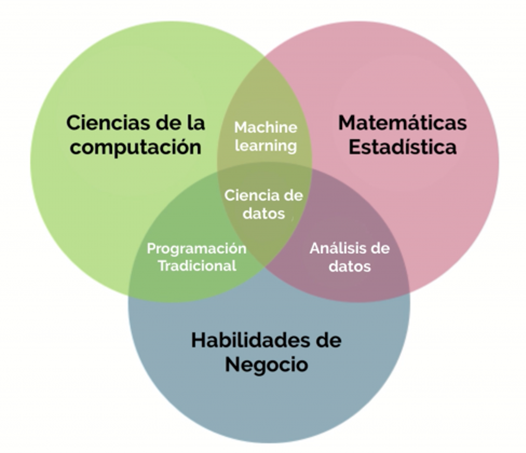

Revelando la Ciencia Detrás de los Datos: Una perspectiva general de la estadística
¿Que es la estadística?
En el vasto universo del conocimiento, pocas disciplinas tienen el poder de influir en nuestras vidas con la profundidad y amplitud que ofrece la estadística. Este campo, a menudo subestimado, es en realidad la piedra angular sobre la que se construye una comprensión precisa y matizada de nuestro mundo. La estadística es la ciencia que revela la historia oculta detrás de los números, no se trata simplemente de sumar, restar, multiplicar o dividir; sino que nos ayuda a interpretar y dar sentido a la información que recopilamos a través de nuestras observaciones y experimentos, proporcionando el marco necesario para tomar decisiones basadas en evidencias y no en conjeturas. Para aquellos que aún no han tenido el placer de sumergirse en el mundo de la estadística, el llamado es claro: exploren esta ciencia con curiosidad y entusiasmo. La estadística no es simplemente una herramienta técnica ni tampoco agarrar un software e ingresar datos y arrojar resultados, sino una forma de ver y comprender el mundo; es una disciplina que desafía nuestras percepciones, enriquece nuestro conocimiento y empodera nuestras decisiones, ser estadístico ha sido incluso descrito como una profesión sexy ¡lo cual presumiblemente es algo bueno!
¿Ser estadístico es ser científico de datos?
Es verdad que la estadística es una ciencia, que usa como materia prima a los datos, sin embargo es importantes ser consciente de como esta materia prima cada vez se hace mas y mas gigante, si antes las empresas solo usaban documentación para anotar reportes, y llevar un inventario, entre otras acciones, hoy en día todo se está sistematizando con herramientas informáticas, es por ello que esto hace que en teoría los cálculos estadísticos cada vez sean más tediosos, sin embargo la estadística no se ha quedado atrás, sino más bien ha evolucionado y se ha embarcado en este mundo globalizado llevado sus modelos a herramientas informáticas que aceleran el proceso soportando un gran volumen de datos, siempre siendo consientes, del cuando, como y porque usar cada método, como configurar o adaptar un determinado logaritmo de acuerdo a cada necesidad. Hoy en día muchos profesionales de otras ramas toman el perfil de estadísticos, pero no tiene la suficiente formación adecuada para ello. Rob J. Hyndman un estadístico australiano en un evento combinado de la Sociedad de Estadística de Australia , Data Science Melbourne , Big Data Analytics y Melbourne Users of R Network mencionaba lo siguiente.
“Los estadísticos parecen atravesar períodos regulares de crisis existenciales mientras se preocupan por otros grupos de personas que realizan análisis de datos. Un tema común es: ¡todas esas otras personas (normalmente científicos informáticos) están haciendo nuestro trabajo! ¿No saben que los estadísticos son las personas más indicadas para realizar análisis de datos? ¡Cómo se atreven a apoderarse de nuestra disciplina!”
Las distintas perspectivas tienen que ver con la inclusión. Si tratamos la estadística como una disciplina limitada, que ajusta modelos a los datos y estudia las propiedades de esos modelos, entonces la estadística está en problemas. Pero si tratamos lo que hacemos como una disciplina amplia que implica el análisis de datos y la comprensión de la incertidumbre, entonces el futuro es increíblemente brillante.
Hay quienes se plantean esta interrogante, “Ciencia de datos: ¿el fin de las estadísticas?” sin embargo Si analizas datos, estás haciendo estadísticas, puedes llamarlo ciencia de datos, informática, análisis o lo que sea, pero sigue siendo estadística. Por otro lado, hay quienes piensan que la estadística es la parte menos importantes de la ciencia de los datos, que hasta incluso hay universidades que sacan la carrera de ciencia de datos y construyen mallas curriculares, donde pobremente incluyen cursos de estadística, sin embargo, ser científico de datos es más complejo de lo que se cree, incluso me atrevería a decir que esta se subdivide por distintos perfiles profesionales.
En una primera perspectiva estrecha, para ser un científico de datos hay que saber mucho de estadística, matemáticas, informática, programación y disciplinas de aplicación, si eso es cierto, nunca existiría un científico de datos. En una segunda visión más amplia, todos ellos son científicos de datos, aunque con diferentes especializaciones, perspectivas y formaciones diferentes, sin embargo, la estadística sigue siendo la base que sostiene los cimientos de la ciencia de los datos, es decir es la ciencia detrás de los datos. Sin embargo, es mucho mejor adoptar una visión amplia e inclusiva, por ejemplo, un estadístico podría decir “soy un científico de datos porque hago análisis de datos e investigo la metodología del análisis de datos”, pero la forma en que lo expresaría mejor es que “soy un científico de datos con una perspectiva y una formación en estadística”, otros científicos de datos tendrán perspectivas y formaciones diferentes.
En una operación de corazón, se requiere un equipo multidisciplinario que incluye al cardiólogo para la evaluación y preparación del paciente, al cirujano cardiovascular que realiza la operación, al anestesiólogo que administra la anestesia y supervisa las funciones vitales, y al perfusionista que maneja la máquina de circulación extracorpórea. Además, enfermeras especializadas en cirugía cardiovascular brindan cuidado durante y después del procedimiento, mientras que el radiólogo interpreta imágenes diagnósticas y, en algunos casos, un especialista en medicina interna gestiona otras condiciones médicas del paciente. Todos estos profesionales colaboran para asegurar una cirugía exitosa y una recuperación óptima; ahora si nos damos cuenta cada quien está dentro de su especialidad, como dice el dicho “zapatero a sus zapatos”, por lo tanto, también debemos adoptar una perspectiva de equipo en materia de ciencia de datos, dado que es una fusión interdisciplinaria.

Ninguno estadístico, informático, matemático, etc., puede abarcar de manera realista todo el campo, por lo que siempre es bueno especializarse en determinados problemas y técnicas. Es una locura pensar que un médico debe saberlo todo, y es igual de loco pensar que un científico de datos debe ser un experto en estadística, matemáticas, informática, programación, disciplinas de aplicación, etc. En cambio, se necesita equipos de científicos de datos con diferentes habilidades, cada uno consciente de los límites de su experiencia y de a quién llamar para pedir ayuda cuando sea necesario, no seamos demasiado sectarios en nuestras disciplinas, pensando que todo aquel que no haya sido formado de la misma manera que nosotros es un hereje.
En la actualidad diferentes Universidades del mundo ofrecen la carrera de científicos de datos, sin embargo revisando las distintas mallas curriculares se percibe siempre una diferencia, aunque la mayoría coincide de manera razonable que los cursos de estadística deben ser infaltables, siempre hay una que otra que se inclina mas en ciertos perfiles, por ejemplo una universidad A presenta la carrera con más énfasis en informática, donde enseñan a utilizar herramientas avanzadas, a programar, manejar volúmenes de datos, etc. Pero sin profundizar mucha o nada en estadística, por otro lado, la universidad B presenta la carrera con más énfasis en estadística, o quizá una universidad C, que presenta más énfasis en un perfil general, “de todo un poco”, esta diversidad en los perfiles formativos lleva a que los profesionales se especialicen en áreas específicas, lo que a veces resulta en la aplicación de sus habilidades en contextos que no siempre se ajustan a su experiencia o capacidades. La ciencia de datos es un campo tan amplio que requiere una combinación de competencias diversas, de tal manera que pudiéramos decir que estudiar ciencia de datos es como si estuviéramos estudiando de manera metafórica “medicina general” y que siempre nos terminamos inclinado más hacia una disciplina dejando de lado y menospreciando las demás, sin embargo por eso es más eficaz trabajar en equipo para abordar problemas complejos en lugar de asumir roles que no se alinean con la formación o habilidades específicas, pero que de alguna una otra forma todo está sincronizado para un solo fin.
¿Que buscan las empresas?
Cada día, la ciencia de los datos y la estadística se vuelve más popular debido a los resultados excepcionales que ofrece, permitiendo mejoras inimaginables en distintas áreas. En este contexto, la cultura de datos se convierte en un elemento esencial para el éxito organizacional. Esta cultura representa el conjunto de valores, creencias y prácticas que impregnan a una organización, subrayando la importancia crítica de los datos en la toma de decisiones y la resolución de problemas. Abarca cómo una entidad percibe, valora, reúne y utiliza los datos a lo largo de sus diversos procesos y funciones, reflejando una integración profunda del análisis de datos en todas sus operaciones, desde la estrategia empresarial hasta el desarrollo de productos y la innovación tecnológica.
Sin embargo, a menudo surge confusión cuando las empresas buscan contratar a un científico de datos, muchas organizaciones tienen expectativas poco claras o mal definidas sobre el rol y las responsabilidades de este perfil profesional. Mientras que el título de “científico de datos” evoca una imagen de experto en algoritmos complejos y análisis profundo, en la práctica, las tareas demandadas pueden ir más allá de lo que realmente abarca el cargo. Las empresas a veces confunden las habilidades y responsabilidades de un científico de datos con las de un analista de datos o incluso un ingeniero de datos. Esto puede resultar en la exigencia de tareas que van desde la limpieza y preparación de datos, el diseño e implementación de modelos predictivos, hasta la interpretación de resultados y la visualización de datos, todo ello bajo un mismo rol; esta confusión no solo puede desviar la atención de las verdaderas competencias del científico de datos, sino también sobrecargar al profesional con expectativas que abarcan múltiples disciplinas.
En consecuencia, las empresas pueden enfrentar desafíos significativos al no alinear sus expectativas con las habilidades específicas que realmente aportan los científicos de datos. Para evitar malentendidos y asegurar un ajuste adecuado entre el perfil profesional y las necesidades organizacionales, es fundamental definir claramente los objetivos y las tareas asociadas al rol, y reconocer la importancia de la especialización dentro del amplio campo de la ciencia de datos.